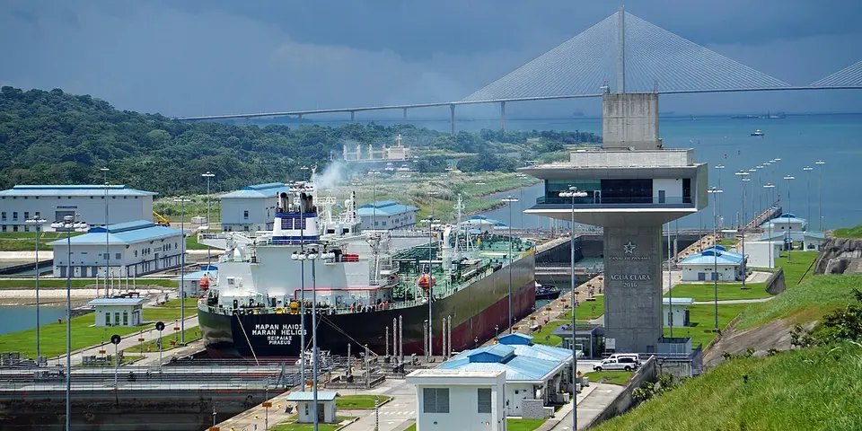

Central America & Caribbean
Panama on a budget
Watch ships squeeze through the Panama Canal, drink highland coffee in Boquete and sail between the tiny islands of San Blas.
Photo: Mariordo (Mario Roberto Durán Ortiz), CC BY-SA 4.0, via Wikimedia Commons

Classic route
Panama City, Boquete, Bocas del Toro and San Blas. 2 weeks.
Before you go
Flights to Panama City: Skyscanner · Kiwi.com · Google Flights
Hostels and guesthouses in Panama City · Bocas del Toro · San Blas Islands · Boquete
Tours and tickets: Panama City · Bocas del Toro
Mobile data: Panama eSIM
Travel insurance: SafetyWing
How much 13 places in Panama cost
Daily budgets per person in US dollars: a hostel dorm or simple guesthouse, local food, local transport and the usual entry fees.
-
Panama City
Giant ships rising through the Miraflores canal locks, then the restored colonial streets and rooftop bars of Casco Viejo.
Bed $20 · Food $14 · Getting around $4 · Extras $6
Budget tip: The Metro and buses are cheap. Walk the Cinta Costera or the Amador Causeway for free skyline views.
$44per day -
Bocas del Toro
Hop between Caribbean islands by water taxi, find starfish at Playa Estrella and surf reef breaks off Isla Colón.
Bed $18 · Food $14 · Getting around $6 · Extras $8
Budget tip: Water taxis are cheaper than tours. Share one with people from your hostel to reach Starfish Beach or Red Frog Beach.
$46per day -
San Blas Islands
Tiny palm islands of Guna Yala, run by the Guna people, where you sleep in simple huts and eat freshly caught fish.
Bed $30 · Food $0 · Getting around $38 · Extras $10
Budget tip: 2 to 3 day trips include boat, meals and huts. Bring enough cash, as there are no ATMs on the islands.
$78per day -
Boquete
A cool highland town of coffee farms, the Lost Waterfalls trail and Volcán Barú, Panama's highest peak.
Bed $15 · Food $13 · Getting around $4 · Extras $5
Budget tip: Climb Barú at night for sunrise over both oceans. Many coffee farms offer tours and tastings, a cheap half-day out.
$37per day -
El Valle de Antón
A cool, green town inside an old volcanic crater, with waterfalls, a Sunday market and the India Dormida ridge hike.
Bed $18 · Food $12 · Getting around $4 · Extras $4
Budget tip: Buses from Albrook terminal in Panama City take about 2.5 hours and cost a few dollars. India Dormida is easy to hike without a guide.
$38per day -
Cerro Punta
Highland farming village near Volcán Barú with strawberry fields, cool weather and the Los Quetzales trail.
Bed $16 · Food $12 · Getting around $4 · Extras $6
Budget tip: Hike the Los Quetzales trail with a guide for quetzal spotting; buses from David are cheap and frequent.
$38per day -
Portobelo
Caribbean town of ruined Spanish forts, the revered Black Christ statue and Afro-Panamanian Congo culture traditions.
Bed $18 · Food $13 · Getting around $4 · Extras $6
Budget tip: Ride the chicken bus from Colón or Sabanitas instead of tours; boat trips to nearby beaches are cheaper shared.
$41per day -
Pedasí
A sleepy town on the Azuero Peninsula with boats to the white beaches of Isla Iguana and surf at Playa Venao.
Bed $18 · Food $13 · Getting around $5 · Extras $8
Budget tip: Shared boats to Isla Iguana leave from Playa El Arenal. Azuero towns hold folk festivals most months, so ask what is on.
$44per day -
Playa Venao
Crescent bay on the Azuero Peninsula known for surf, sunsets and access to Isla Iguana's reefs.
Bed $20 · Food $13 · Getting around $5 · Extras $8
Budget tip: Stay in hostels near the beach that rent boards; transport from Pedasí by local bus is inexpensive.
$46per day -
Gamboa
Rainforest town on the Panama Canal with Soberanía National Park birding, Pipeline Road walks and boat trips past big ships.
Bed $20 · Food $13 · Getting around $5 · Extras $10
Budget tip: Pipeline Road is great for self-guided birding; take the Gamboa bus from Albrook terminal in Panama City.
$48per day -
Isla Taboga
Island of flowers an hour by ferry from Panama City, with quiet beaches and a hike to a viewpoint over the canal approaches.
Bed $22 · Food $14 · Getting around $15 · Extras $3
Budget tip: Take the ferry from the Amador Causeway and bring snacks; as a day trip it saves on island lodging.
$54per day -
Santa Catalina
A dusty little surf village and the jumping-off point for diving and snorkeling in Coiba National Park.
Bed $18 · Food $14 · Getting around $5 · Extras $30
Budget tip: There is no ATM, so bring enough cash. Snorkel day trips to Coiba cost far less than diving and still show reef sharks and turtles.
$67per day -
Boca Chica
Fishing village near the Gulf of Chiriquí marine park, with uninhabited islands, snorkeling reefs and whale watching.
Bed $22 · Food $14 · Getting around $8 · Extras $25
Budget tip: Island-hopping trips are cheaper if shared; bring cash for park fees and boat trips.
$69per day
Know before you go
Panama on a budget: the basics
Currency
$1 = 1.00 PAB
US dollar and balboa
| Dollars to PAB | PAB to dollars | ||
|---|---|---|---|
| $1 | 1.00 PAB | 1 PAB | $1.00 |
| $5 | 5.00 PAB | 5 PAB | $5.00 |
| $10 | 10.00 PAB | 10 PAB | $10.00 |
| $20 | 20.00 PAB | 50 PAB | $50.00 |
| $50 | 50.00 PAB | 100 PAB | $100 |
| $100 | 100 PAB | 500 PAB | $500 |
A typical day here (about $46) is roughly 46.00 PAB.
Mid-market rate on 2026-10-05. Cash machines and exchange desks pay a little less.
Getting around
Comfortable buses run from Panama City to David, with minivans up to Boquete, and a bus plus boat combination gets you to Bocas del Toro. Panama City has a cheap Metro, and Uber, inDrive and DiDi are widely used. San Blas trips need a 4x4 transfer and boat arranged through a tour operator, so book a day or two ahead.
Where to sleep
Panama City, Boquete and Bocas have plenty of hostel dorms, and San Blas stays are in simple Guna-run cabins or hammocks, usually as part of a package.
What to eat
- Sancocho: chicken soup with yam, corn and culantro
- Patacones: twice-fried green plantain slices
- Carimañolas: fried cassava rolls filled with spiced meat
- Hojaldras: fried dough eaten for breakfast
Money
The US dollar is the paper currency, with Panamanian balboa coins in change, and cards work in the capital but cash is needed in San Blas and Bocas. Tipping around 10% in restaurants is normal.
Phone data
SIMs from +Móvil and Tigo are easy to buy, and coverage is good on the mainland but limited or absent on most San Blas islands.
Heads up
San Blas is run by the Guna people, who charge small entry and island fees and ask permission before you photograph them.
Panama travel: quick answers
How much does a day in Panama cost on a budget?
About $46 a day for one person, from $37 in Boquete to $78 in San Blas Islands. That covers a hostel dorm or simple guesthouse, local food, local transport and the usual entry fees, so a week runs about $322 before flights.
When is the best time to visit Panama?
December to April is the best time, with the most reliable weather for getting around.
What is the cheapest place to visit in Panama?
Boquete, at about $37 a day. A cool highland town of coffee farms, the Lost Waterfalls trail and Volcán Barú, Panama's highest peak.
How long do you need in Panama?
Panama City, Boquete, Bocas del Toro and San Blas. 2 weeks.
How much is $1 in Panama?
One US dollar is about 1.00 US dollar and balboa (PAB), going by the mid-market rate on 2026-10-05. So $20 is roughly 20.00 PAB, and a typical budget day of $46 comes to about 46.00 PAB.
How do you get around Panama cheaply?
Comfortable buses run from Panama City to David, with minivans up to Boquete, and a bus plus boat combination gets you to Bocas del Toro. Panama City has a cheap Metro, and Uber, inDrive and DiDi are widely used. San Blas trips need a 4x4 transfer and boat arranged through a tour operator, so book a day or two ahead.
What food should you try in Panama?
Sancocho, chicken soup with yam, corn and culantro. Patacones, twice-fried green plantain slices. Carimañolas, fried cassava rolls filled with spiced meat. Hojaldras, fried dough eaten for breakfast.
Planning around the seasons? See where to go in December, or compare the cheapest countries nearby.
Similar budgets nearby
- Dominican Republic $45/day
- Honduras $49/day
- Cuba $49/day
- Trinidad and Tobago $55/day